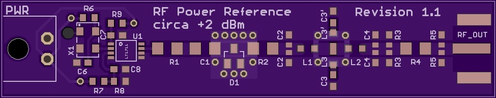
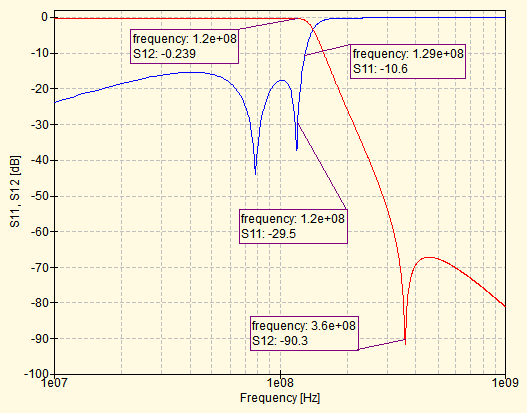
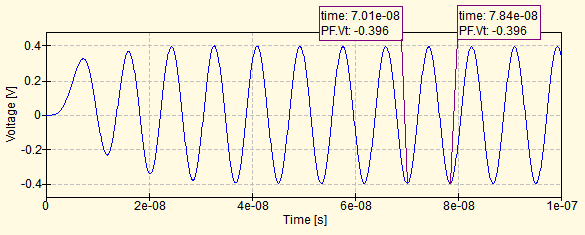

Simulated filter s-parameters using 62 nH, 6.8 nH and 27 pF
This design is based off of W1GHz's design, in QST April 2007 as well as here. It feeds the output of a crystal or MEMS oscillator into a diode clipper to generate a square wave with a fixed voltage and then filters out the harmonics to reduce this to a sine wave. The filter is matched to 50 Ω (W1GHz uses a Chebyshev filter), but an additional output attenuator helps improve the matching.
I redesigned the board for SMD components and using 50 Ω coplanar waveguide. In addition, the output impedance of the oscillator I intended to use was around 10 kΩ, so I added a comparator as a buffer. The schematic and board design were done in EAGLE, and the board is currently being prototyped by OSH Park. Measurements will be done as soon as the boards are ready, and source files will be made available once I'm happy with the board, or upon request.

The filter used to remove the oscillator's harmonics is a modified Chebyshev type 1. Initial values for the filter were computed using a cutoff frequency of 130 MHz and a ripple of 0.01 dB. W1GHz then suggests adding an inductor in series with the central capacitor to create a notch at the third harmonic. The values of this inductor and capacitor were tuned to pass 120 MHz but block 360 MHz, and simulation results (using Qucs) are pictured below. ESR values were taken from datasheets of potential components found on Mouser, and make a noticeable difference in the filter response.
Filter Schematic

Simulated filter s-parameters
Simulated S22 at the full circuit output

Simulated transient signal at the full circuit output
The filter can be further improved through some tweaking of the values by hand. The simulated S12 shows two notches, but these can be made to coincide by reducing the inductance values to 62 nH and 6.8 nH and increasing C2 and C5 to 27 pF. Simulations show a marked improvement in S12 at 120 MHz, as well as a wider bandwidth, but also that the third harmonic notch has shifted slightly. The notch can't be shifted back using standard component values, and although introducing an asymmetry in the central component values does widen this notch, this is undesirable with a CPW layout.
Simulated filter s-parameters using 62 nH, 6.8 nH and 27 pF
Simulated filter s-parameters using asymmetric central component values